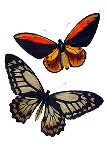

Descrição
Ornithoptera croesus, chamada popularmente como Wallace's golden birdwing, borboleta asa de passaro de wallace, é uma borboleta do genero Ornithoptera. Uma borboleta que diferencia muito entre a especime masculina, e a especime feminina:
Masculino:
 A O.croesus masculina tem uma asa de 13-15cm, de cor lanranjada, amarela-dourada, e marrom escuro. Apresenta o tórax e cabeça de cor castanha, e abdómen amarelo com linhas esverdeadas, uma marca sexual oval na frente. As veias no macho são discretas, sendo notadas por suaveis variações de tom na asa, principalmente nas asas inferiores, onde apresentam areas de tonalidades mais escuras.
Feminino:
A O.croesus feminina tem uma asa de 16-19cm, de cores marrom e branca, com veias claras e de cor marrom, manchas marrons entre os tons de branco das assas. Apresenta a cabeça, e torax de cor marrom, com o abdómen branqueado. Elas são maiores que as especimes masculinas, é claro que a O.croesus são sexualmente dimorficos que são especies que apresentam diferentes caracteristicas, mesmo não relacionada a reprodução.
A O.croesus é uma especie do genero Ornithoptera, os membros desse genero são chamados popularmente por birdwings, borboletas asas de passaro, devido suas dimensões incomuns, muitas apresentam formato de asas unicos, e tamanhos surpreendentes, a maior especime de borboleta do mundo (a Ornithoptera alexrandrae) é uma birdwing, conhecida popularmente de queen alexrandrae's birdwing, que é encontrada nas florestas da provincia de Oro, Papua nova guiné.
Historia
A Ornithoptera croesus leva o nome popular de Wallace's Golden Birdwing, referindo a Alfred Russel Wallace que em 1859 relatou a O.croesus em seu livro The Malay Archipelago, ele descreveu:
"The beauty and brilliancy of this insect are indescribable, and none but a naturalist can understand the intense excitement I experienced when I at length captured it. On taking it out of my net and opening the glorious wings, my heart began to beat violently, the blood rushed to my head, and I felt much more like fainting than I have done when in apprehension of immediate death. I had a headache the rest of the day, so great was the excitement produced by what will appear to most people a very inadequate cause."
Subespecies/localização Ornithoptera Croesus:
- Ornithoptera croesus croesus
- Localizada em um grupo de ilhas chamada Bacan, numa provincia da indonésia chamada Maluku.
- Ornithoptera croesus lydius
- Localizada nas ilhas Halmahera, Ternate, Tidore, na provincia de Maluku
- Ornithoptera croesus helios
- Localizada na ilha Kasiruta, no arquipelago de bacan(ou ilhas de bacan)
- Ornithoptera croesus sananaensis
- Localizada nas ilhas Bacan
- Ornithoptera croesus toeantei
- Localizada no grupo de ilhas Morotai
- Ornithoptera croesus
- Localizada na ilha Mandioli, nas ilhas Bacan